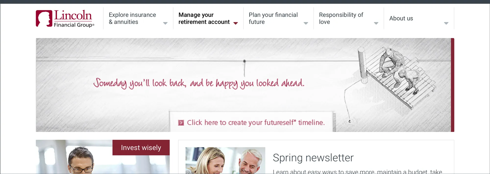
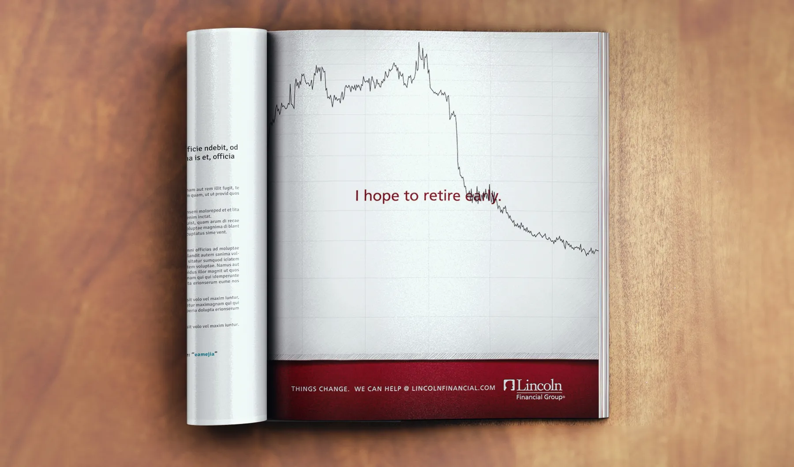
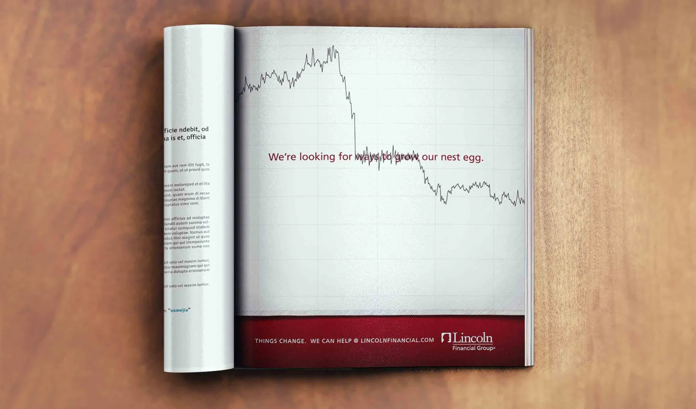
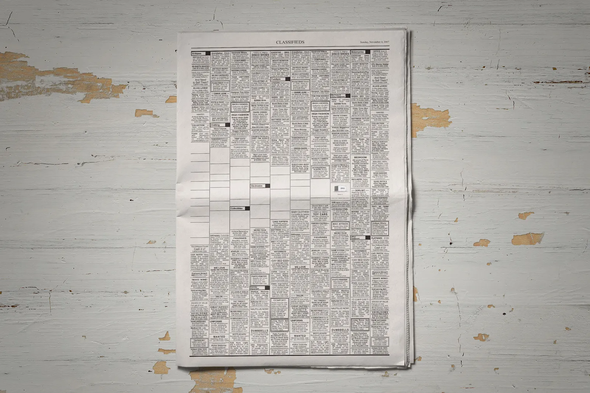

Financial planning is often overwhelming and number-driven.
So we created an intuitive planning tool that helped people visualize their financial futures without a single number, using simple drag-and-drop life events to make complex decisions feel approachable and human. The site helped net an Effie for LFG's Futureself Campaign.
Futureself Timeline Experience

Things Change Campaign
In the wake of a major market downturn, investor confidence was shaken. Our challenge was to reassure people that while their plans may have changed, Lincoln Financial Group would remain a steady guide, helping them navigate uncertainty, rebuild confidence, and stay on track toward their long-term goals.


Credits
Digital Development Partner (Futureself Timeline Experience): Firstborn
- Executive Creative DirectorJohn Stapleton
- Creative DirectorJames Rosene
- Associate Creative DirectorKevin Botfeld
- Associate Creative DirectorBill Allen
- Art DirectorAdam LaRocca
- CopywriterChris Miller
- CopywriterJeff Pospichal
- Agency22squared

Next project
Store It
PODS